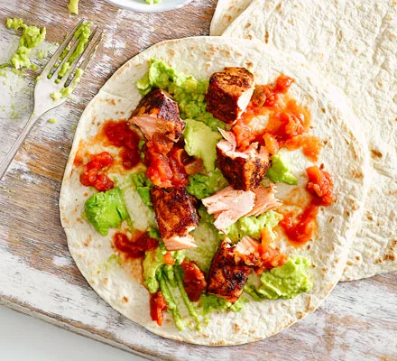

Description
In need of a quick fix? Go Tex-Mex with these fish fajitas that'll feed four in less than 15 minutes!
Ingredients
- 4 salmon fillets
- suitable frying oil
- 1 fajita kit
- 2 avocados
- 2 limes
Steps
- Coat the salmon in 1 tbsp oil and the fajita spice mix. Add 1 tbsp oil to a frying pan and fry for 8 mins until blackened.
- Mash the avocados with a fork, season and squeeze over the juice of 1 lime. Serve the salmon in large flakes with the tortillas, avocado, salsa and the other lime, cut into wedges.
Return to top
Return to main page